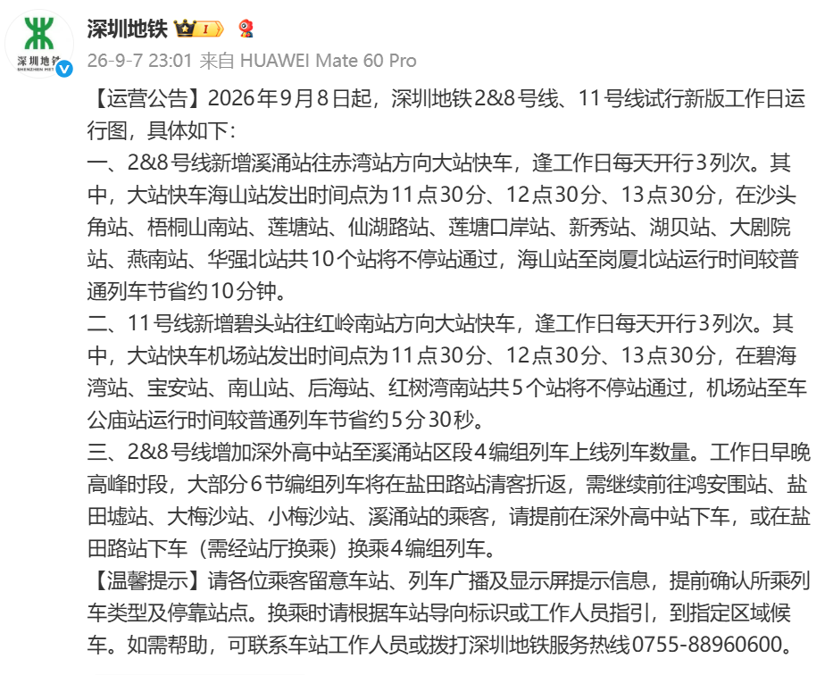
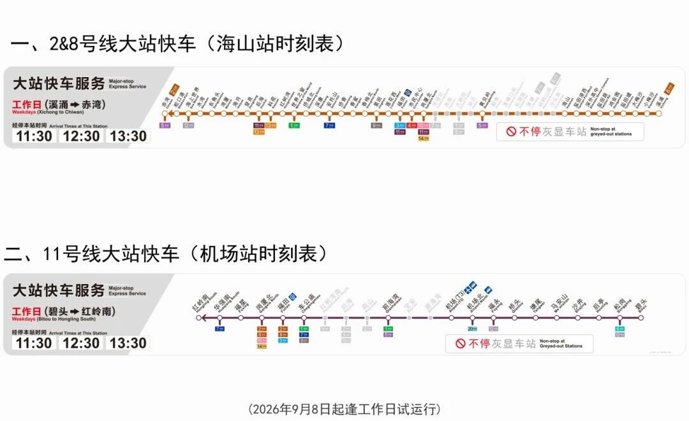
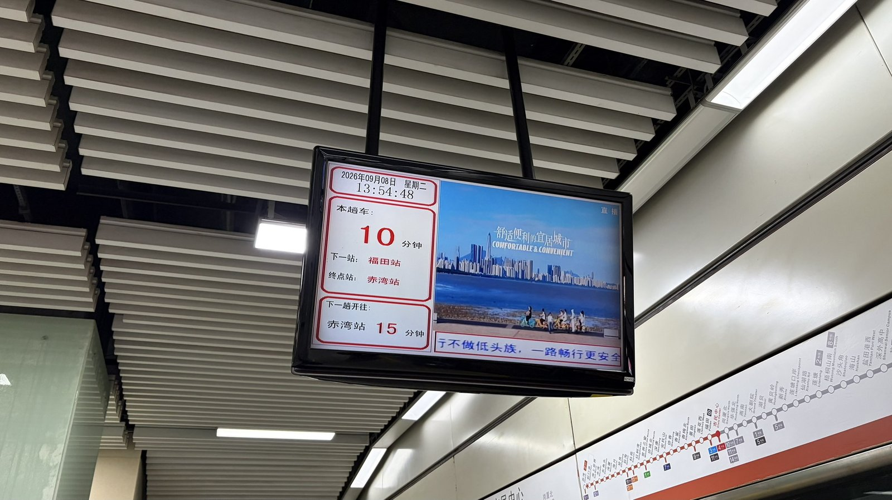
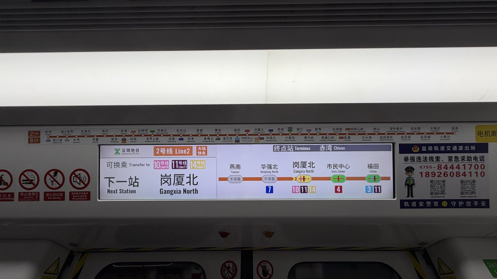
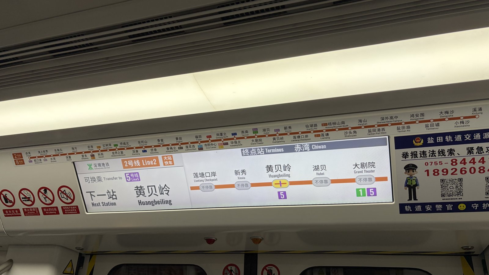
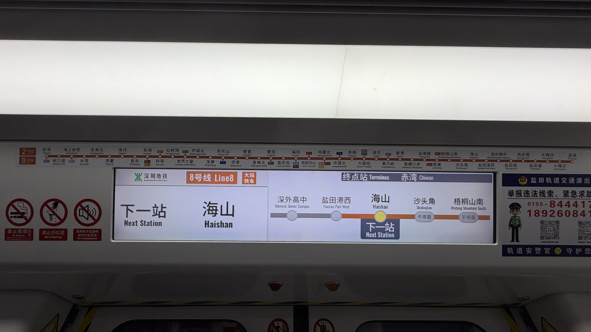
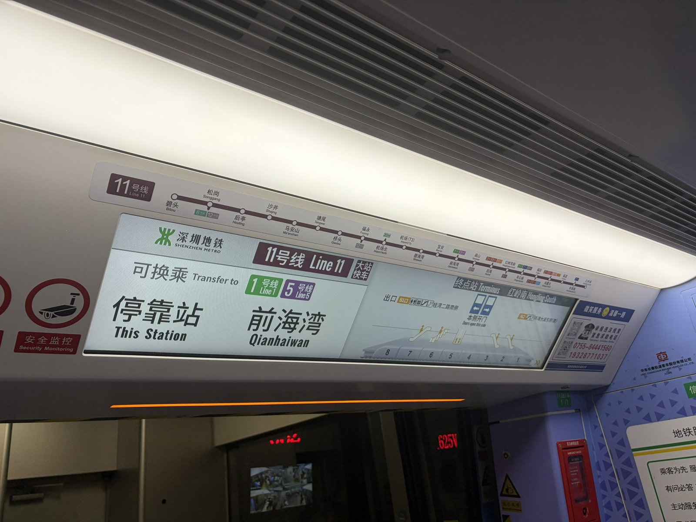
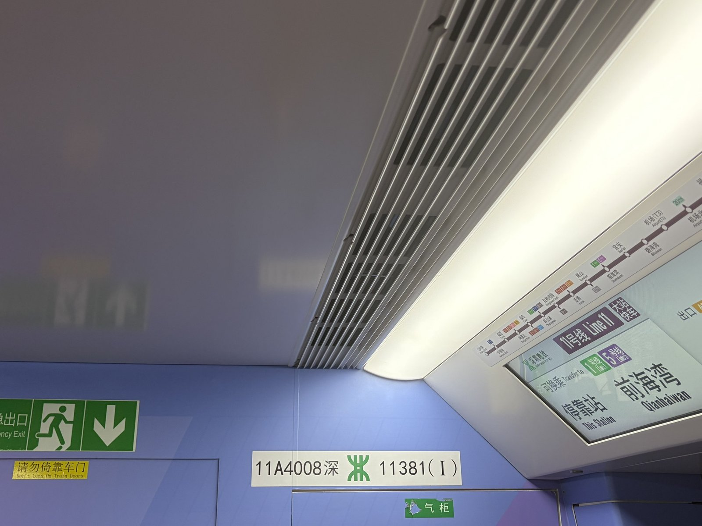
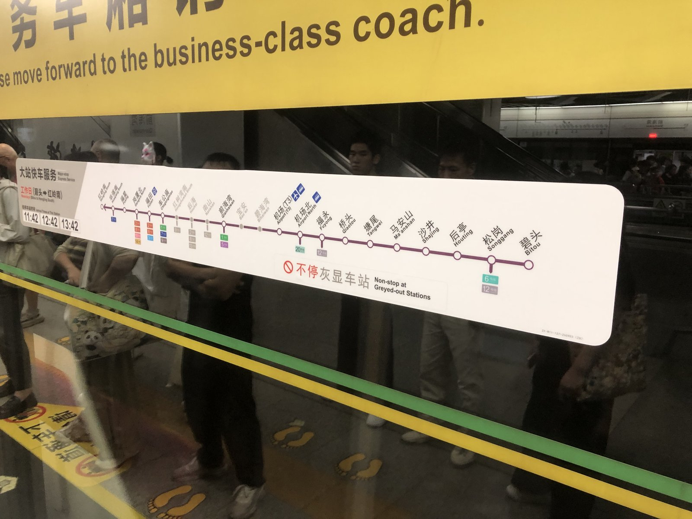

"这是我了解大站快的唯一途径。"
2026年9月8日，轨交爱好者社群里，这句话刷屏了。没人想到，这趟快车第二天就没了。
一、它来过：9月8日的公告
9月8日，深圳地铁发布运营公告，宣布2&8号线、11号线试行新版工作日运行图。核心调整有三条：
2&8号线：
- 新增溪涌→赤湾方向大站快车，工作日每天3列次。
- 海山站发车时间：11:30、12:30、13:30。
- 跳停10个站：沙头角、梧桐山南、莲塘、仙湖路、莲塘口岸、新秀、湖贝、大剧院、燕南、华强北。
- 海山→岗厦北较普通列车节省约10分钟。
11号线：
- 新增碧头→红岭南方向大站快车，工作日每天3列次。
- 机场站发车时间：11:30、12:30、13:30。
- 跳停5个站：碧海湾、宝安、南山、后海、红树湾南。
- 机场→车公庙较普通列车节省约5分30秒。
最重要也最致命的一条：
- 2&8号线增加深外高中→溪涌区段4编组列车上线列车数量。
- 工作日早晚高峰，大部分6编列车在盐田路站清客折返。
- 往鸿安围、盐田墟、大梅沙、小梅沙、溪涌的乘客，需在深外高中提前下车，或在盐田路下车后经站厅换乘4编组列车。
——这条，后来被证明是整个方案的"阿喀琉斯之踵"。


二、为什么说它是"不可能完成的任务"
深圳地铁每一条线路都没有越行线，这是大站快车在现有物理条件下最根本的限制。没有越行线意味着快车和慢车在同一条轨道上跑，快车只能靠"拉开间隔"来避免被慢车挡住。公告里的方案是：快车开行后，慢车间隔被拉大到15分钟。大站快车本身的发车间隔是10分钟。
社群里有同好点出了问题的核心：大间隔、低运力。但东段的情况又很特殊，4编组列车在溪涌到深外高中区段，间隔可以压到接近1分钟——跟1号线市区段的密度差不多。也就是说，深铁试图用两套完全不同的运营逻辑硬接在一起：西边用大间隔低密度的快慢混跑，东边用高密度小编组摆渡。接驳点就是盐田路站——站厅换乘。

三、现场：混乱从广播开始
9月8日当天，深外高中站率先"乱套"。广播只播了一句话："本次列车为大站快车，部分站点不停靠。"——没了。哪个站不停？哪个站停？乘客站在站台上，面对的是一个信息黑洞。
大站快车进站时，工作人员被迫拿起喇叭在站台上喊话补位。
盐田路站则是另一番景象。大部分6编列车在此清客折返，乘客被"赶"下车后，需要步行至站厅，再换乘4编列车继续东行。早高峰期间，同台换乘还能勉强维持秩序；到了晚高峰，拖着行李箱的游客、放学的学生、下班回家的居民在站厅里交汇——人潮对冲、导视不清、喇叭声此起彼伏。有同好一针见血：
"简直是广兰路行为。早高峰还可以让人同台换，晚上你把人全部拉上站厅。"
说完还补了一个拍桌嘲笑的表情。上海地铁2号线广兰路站，以4/8编组换乘闻名，但那至少是同台换乘。盐田路是站厅换乘，动线更长、通道更窄、体验更差。
四、快车本身：LCD屏里的荒诞
除了火猫，还有几位同好实际体验了大站快车。车内LCD屏显示"大站快车"字样，停站表清晰列出了被跳过的站点。
- 2号线LCD屏显示下一站"岗厦北"，可换乘10/11/14号线，但屏幕上灰底白字标注了"燕南"、"华强北"不停靠。
- 2号线LCD屏显示下一站"黄贝岭"，可换乘5号线，但"莲塘口岸"、"新秀"、"湖贝"、"大剧院"统统不停靠。
- 11号线LCD屏显示停靠"前海湾"，可换乘1/5号线。
- 站台屏蔽门贴纸则直接印着："大站快车服务，工作日（碧头→红岭南），11:42、12:42、13:42，不停靠灰显车站"。



但有图有真相——车厢里人不多。毕竟是午间时段，大部分乘客还在工位上，硬生生挤出三个"午间窗口"来展示快车技术，本身就有一种微妙的违和感。快车发车间隔10分钟，慢车紧随其后要等15分钟——没有越行线，快慢车之间只能硬生生拉开一个"鸿沟"。快车省下的那10分钟，是用慢车上所有人的时间换来的。
五、最短命的快车
9月9日，官方微博发布取消公告：
【运营公告】为方便乘客出行，结合实际，自2026年9月10日起，深圳地铁2/8号线恢复原列车运行图，列车运行交路为"赤湾—溪涌"全程交路和"湾厦—莲塘""深外高中—溪涌"小交路。请各位乘客留意车站、列车广播及显示屏提示信息。
从9月8日试行，到9月10日恢复原图——2号线大站快车实际存活时间不足24小时。它甚至没能撑过一个完整的晚高峰。社群里的反应出奇平静。没有惊讶，没有愤怒，甚至没有太多讨论。仿佛大家都已经习惯了这种"来了又走"的节奏。——"最短命安检"之后，"最短命大站快"归位。深铁2026年限定款"闪电体验套餐"，正式集齐两枚徽章。
六、为什么取消？猜也不难猜
官方公告里的"结合实际"四个字，已经说明了一切。背后真正的原因，不需要内部文件也能拼凑出来：
第一，盐田路站厅换乘现实撑不住。这是结构性问题，不是优化导视能解决的。晚高峰的人潮对冲、站厅通道的物理瓶颈、换乘动线的曲折——每一个都是硬伤。
第二，信息指引严重不足。广播只说"部分站点不停靠"，PIDS显示混乱，工作人员拿喇叭补位——一套全新的服务模式，配套的信息指引却完全没跟上，注定是灾难。哪怕车厢LCD屏做得再清晰，也无法弥补站台级的混乱。
第三，午间快车与真实需求错位。11:30、12:30、13:30——这三个时间点，既不是通勤高峰，也不是旅游高峰。它更像是一种"表演型运营"，而非"服务型运营"。
第四，投诉。网络上虽然没有大规模发酵，但"乱套"两个字后面跟着的，一定是大量打进热线的投诉电话。88960600那头的接线员，9月8日那天应该很忙。
七、记录的意义
这趟快车已经没了。但它留下的东西还在：拍的LCD屏原图、同好们的那句"这是我了解大站快的唯一途径"以及随之而来的满屏+1、"广兰路行为，晚上把人全拉上站厅"的精准吐槽、4编组车门上那张神似申通3/4号线的贴纸、盐田路站的配线截图，以及官方公告和取消公告的时间线对比。
这些东西，被记录在"走进新天地·Railway"里。这个网站相信一件事：数字空间的好处就是，再短命的东西，也能被记住。
这趟车活了不到一天，但它不冤。它至少帮深铁印证了一件事：大站快车在深圳地铁现有的物理条件下，不是"要不要开"的问题，而是"根本开不了"的问题。
下次再有大站快车的风声，同好们大概会说：
"哦，又来了啊。"
然后继续该坐坐、该挤挤。毕竟深圳人坐地铁，什么大风大浪没见过。
八、补记：11号线的大站快车，至今还在跑
2号线的大站快车活了不到24小时就被取消，但同一天上线的11号线大站快车，至今仍然保留运行。同样是"大站快"，两条线的命运截然不同。
不过11号线的停站选择，同样让人看不明白：被跨掉的名单里，赫然有后海——那是与2号线、13号线的换乘站；而它前后那些再普通不过的站，比如福星，却照样停靠。一边是换乘枢纽被跳过，一边是普通中间站被保留，这样的取舍很难说是"以客流和换乘需求为导向"。
更何况，11号线本身也谈不上有多"快"。沿途限速路段一抓一大把，其中碧海湾—机场那一段更是离谱中的离谱——限速压得极低，跑起来甚至不如某些普速线路痛快。在这样一条线路上开行大站快车，省下来的时间，有一大半又被限速吃回去了。
换句话说，11号线的"快"，更多停留在名字上。



素材致谢：哔哩哔哩 @三言zerokite（供图）、@火猫firecat（现场体验及金句），以及所有参与实时讨论的同好们。
记录时间：2026年9月9日 · 首发于：走进新天地·Railway